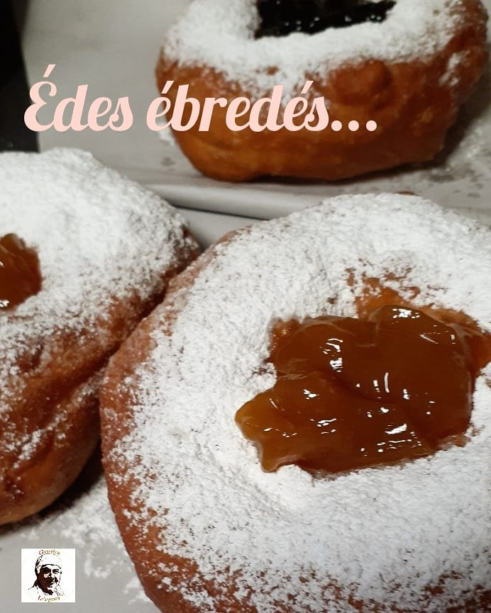
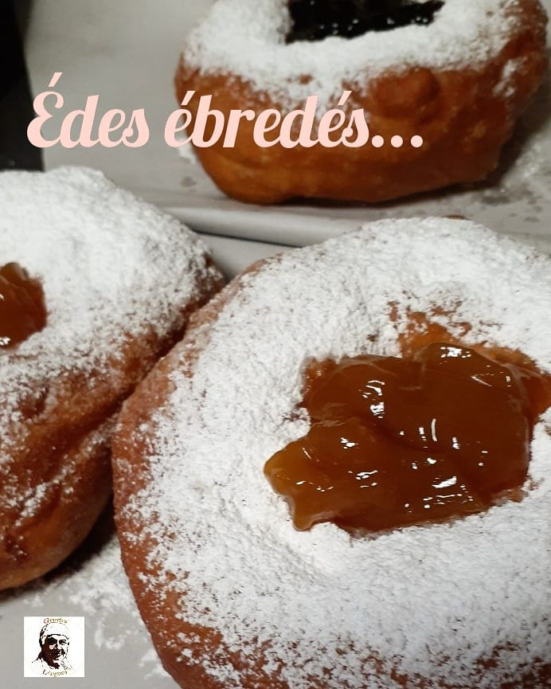
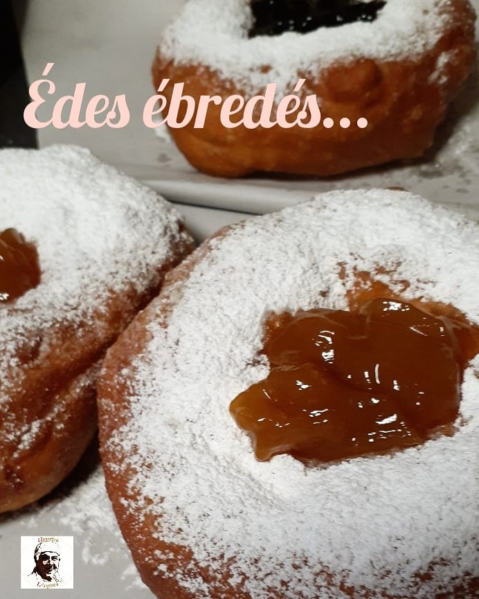

Képek


 

Hagyományos és töltött lángosok, palacsinta, fánk, kávé és üdítők. Várunk Szeged szívében, a Mars téri Piac Nagycsarnokában.
Az árak tájékoztató jellegűek. Pontos információért érdeklődj telefonon.

📍 Szeged – Mars téri Piac, Nagycsarnok
📞 +36 70 504 8238